MTCNA
Offered Now
MikroTik Certified Network Associate
The foundation track. Covers RouterOS basics: initial configuration, routing, firewall, wireless, and QoS.
- Entry‑level, no prerequisite
- Prerequisite for all other tracks
A Certified MikroTik Training Academy
The MikroTik Academy at Laguna State Polytechnic University – San Pablo City Campus trains students, IT professionals, and enterprise partners in RouterOS networking through hands-on labs taught by certified trainers.
Academy in Action
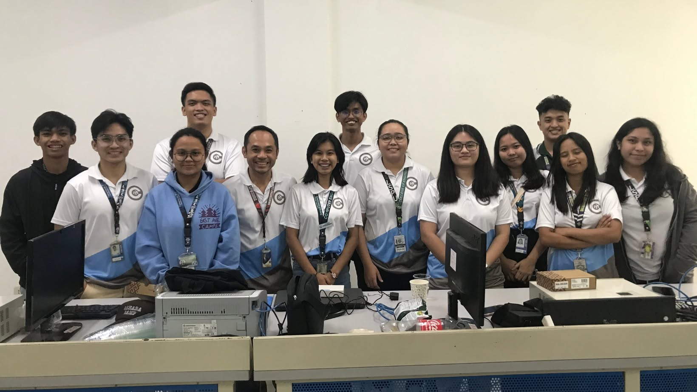
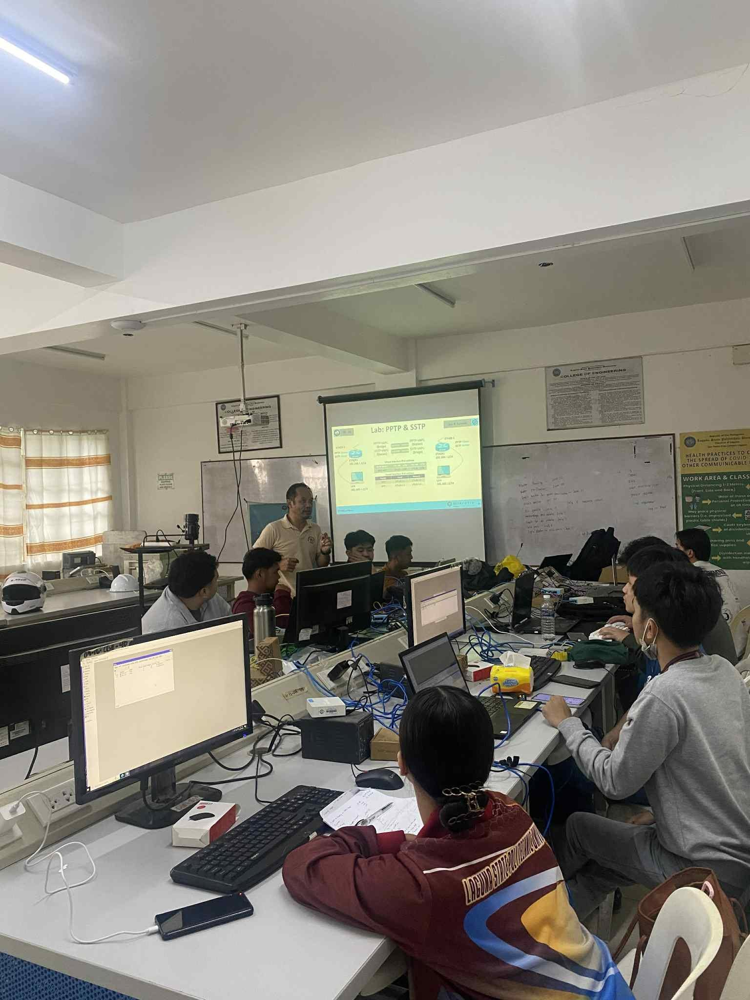
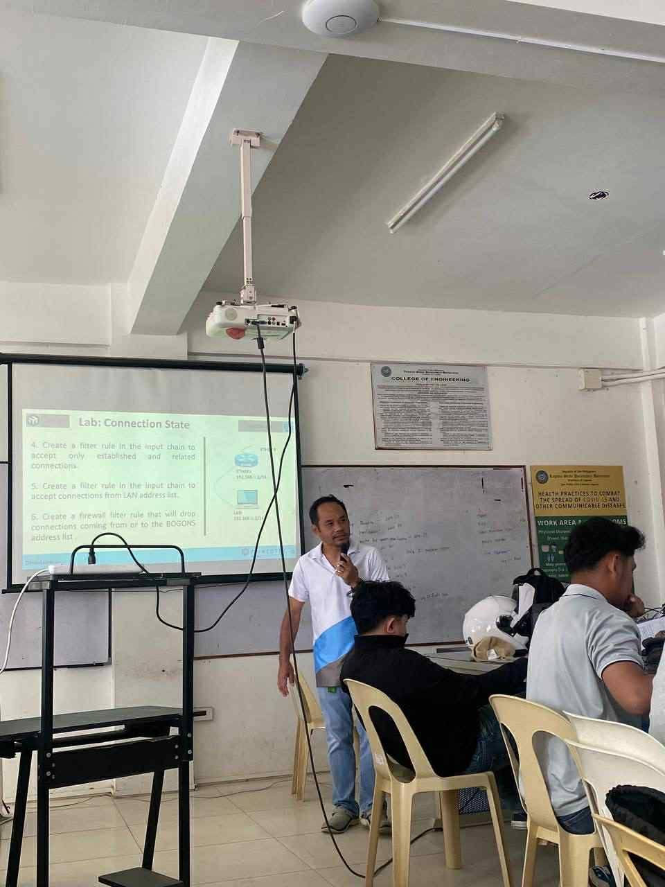
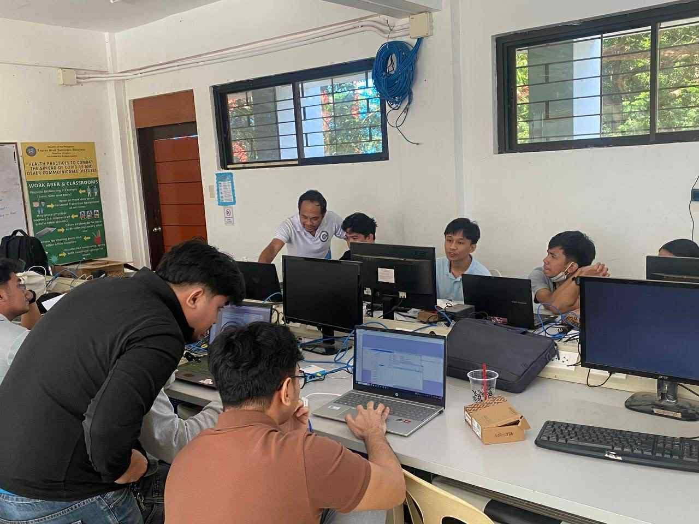
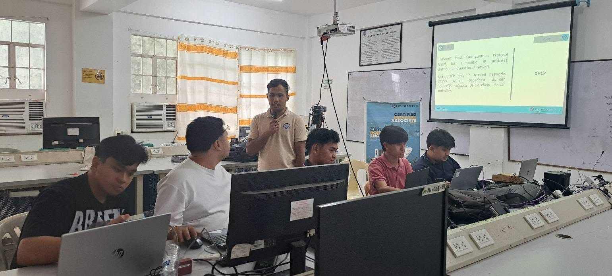
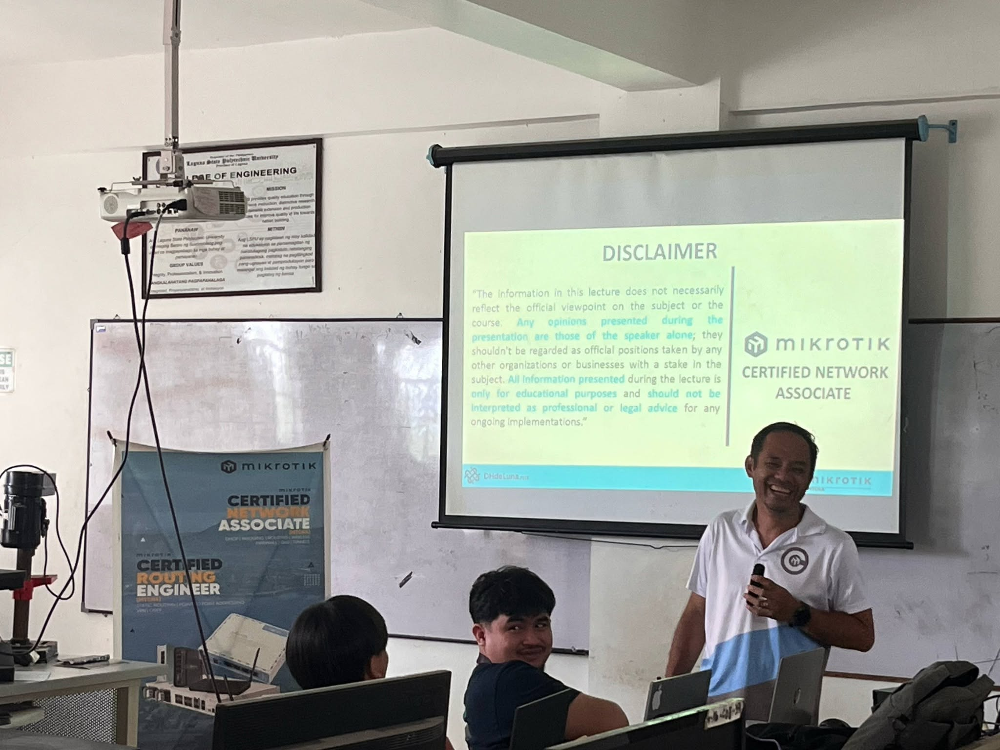
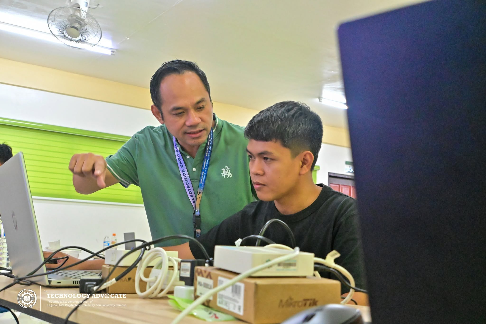
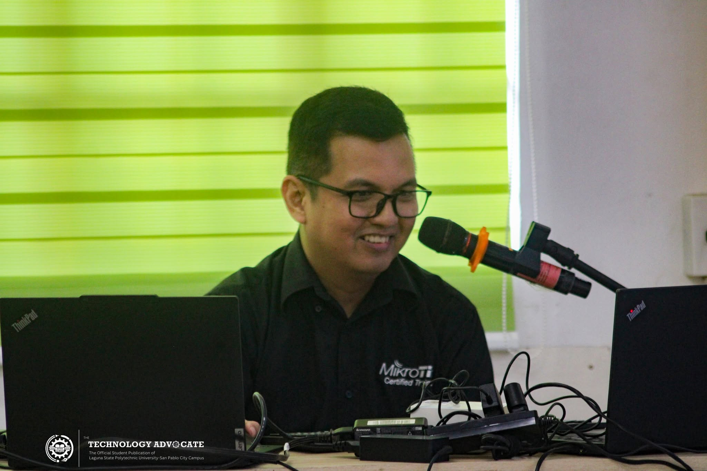
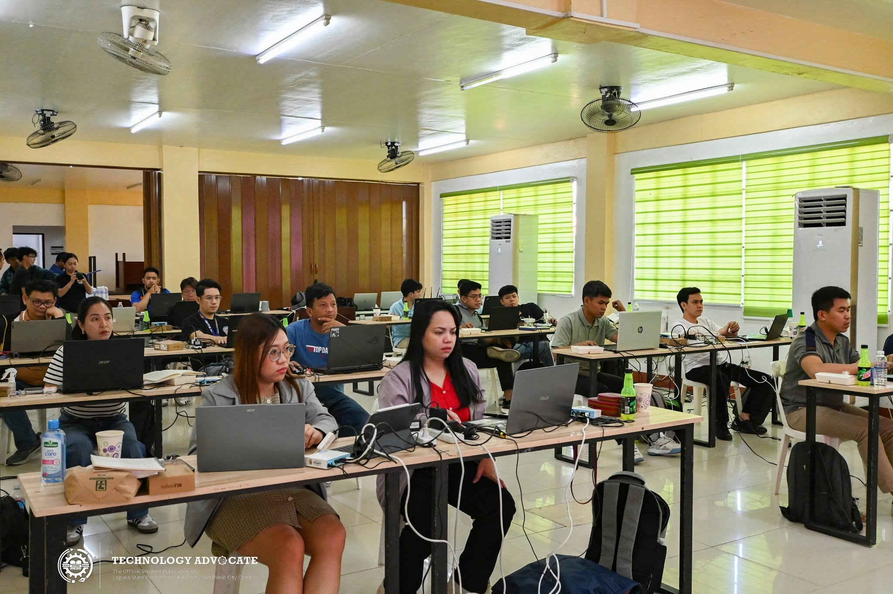
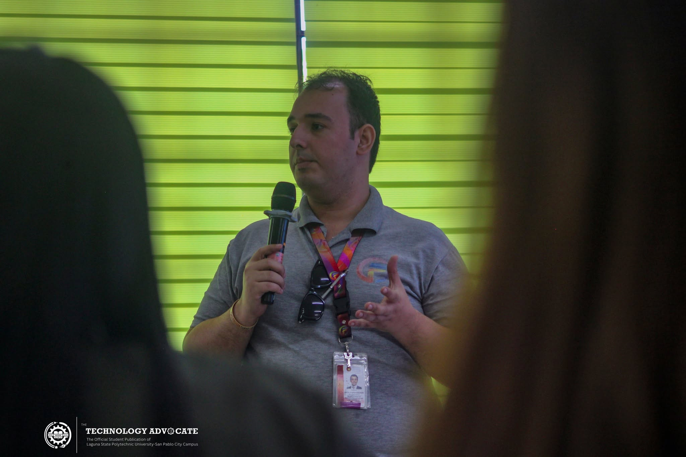
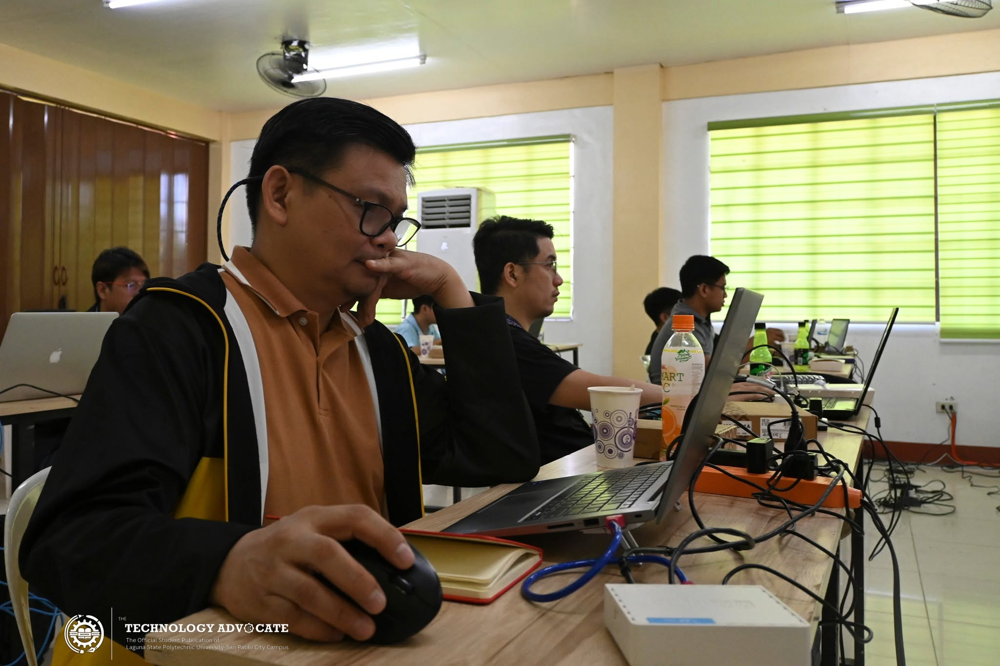
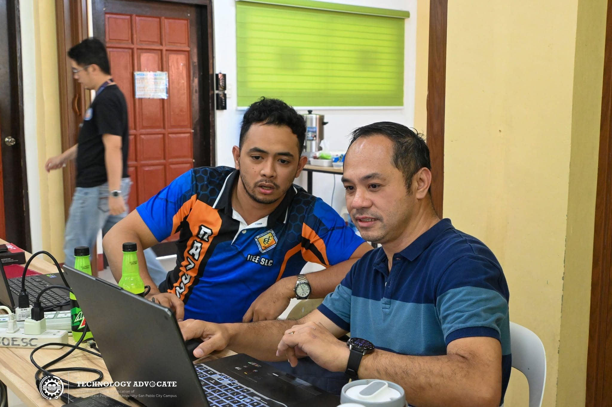
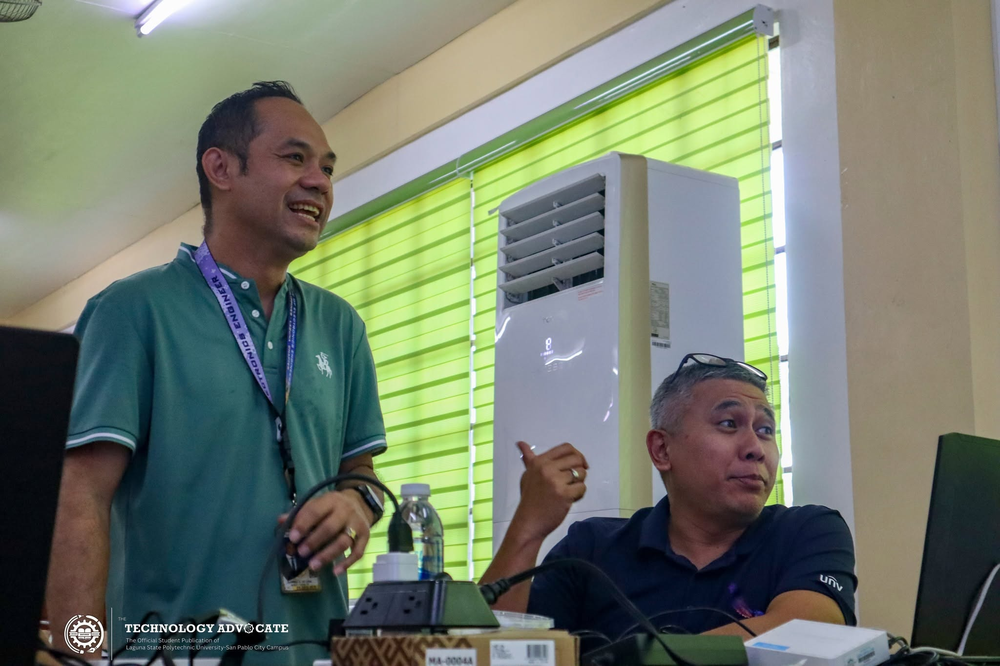
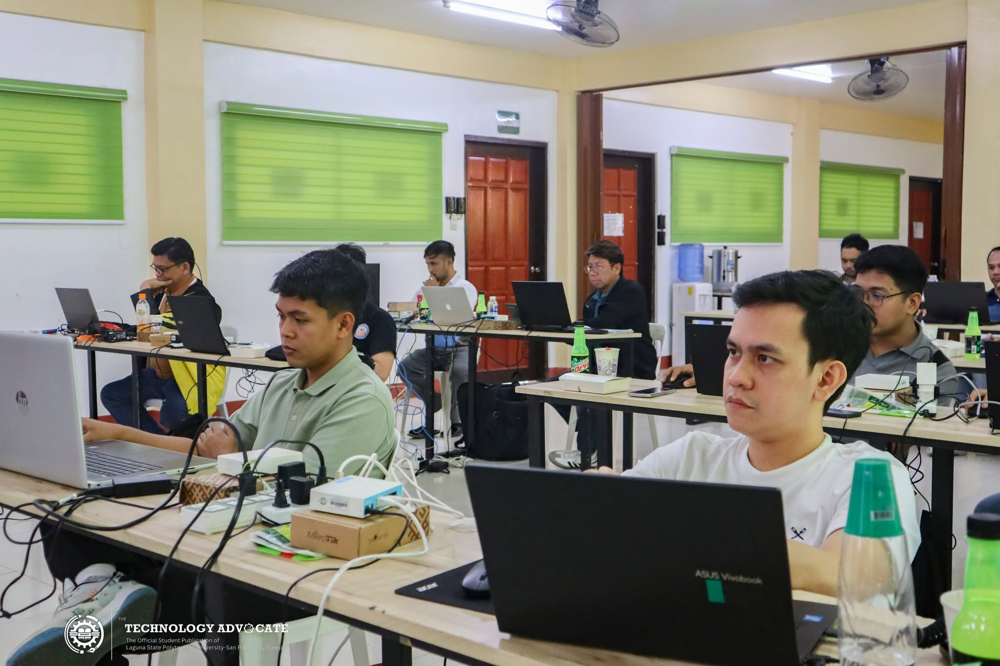
About the Academy
The LSPU San Pablo City Campus MikroTik Academy delivers official RouterOS training under the MikroTik Certified Consultant program. Learners configure real MikroTik RouterBOARD devices in a dedicated lab, working through routing, wireless, security, and network automation the same way field engineers do.
The Academy operates under the College of Engineering and Computer Studies of LSPU – San Pablo City Campus, and every course maps to an official MikroTik certification exam, sat on campus at the end of each training block.
Certification Tracks
The Academy currently runs two certification tracks on campus, with more planned as the program grows.
MTCNA
Offered Now
The foundation track. Covers RouterOS basics: initial configuration, routing, firewall, wireless, and QoS.
MTCRE
Offered Now
Advanced routing protocols – OSPF, BGP, and policy routing for multi‑router environments.
Meet the Team
MikroTik Certified Trainer
Add a short bio: certifications held, years of field experience, and courses handled at the Academy.
MikroTik Certified Trainer
Add a short bio: certifications held, years of field experience, and courses handled at the Academy.
Lab Coordinator
Add a short bio: role in the Academy, faculty department, and areas of specialization.
Student Organization
MikroTik Circles is the official student organization of the LSPU–SPCC MikroTik Academy, bringing together students who want to go beyond the classroom with networking and RouterOS.
The org runs alongside the Academy's certification tracks – supporting members with study groups, hands‑on lab meetups, and exam prep for MTCNA and MTCRE, plus community and outreach activities throughout the school year.
Announcements
Applications Open
MikroTik Circles, the official student organization of the LSPU–SPCC MikroTik Academy, is opening slots for officers and members for the upcoming school year. Joining is open to students interested in networking, RouterOS, and hands-on lab work alongside the Academy's certification tracks.
Message Page →March 6, 2026
Networking engineers and technicians from across Laguna earned their MikroTik Certified Network Associate (MTCNA) credential on day two of the four-day MikroTik Training Bootcamp 2026, held March 5–8 at the LSPU–SPCC College of Teacher Education Function Hall. The MTCNA track covered DHCP, static routing, NAT, firewalling, queues, tunnels, and wireless basics, with Singapore-based Senior Technical Solutions Manager Uvxille Unabia serving as trainer and test facilitator.
Read more →March 8, 2026
Participants advanced to the MikroTik Certified Routing Engineer (MTCRE) exam on the final day of the Bootcamp, covering OSPF, VLANs, static routing, and tunnels. Trainer Uvxille Unabia noted the certification's value for both local and international job applications, and results were released privately to each participant's account after submission.
Read more →Get in Touch
Reach out to the Academy office at LSPU San Pablo City Campus for the current schedule, fees, and enrollment requirements.